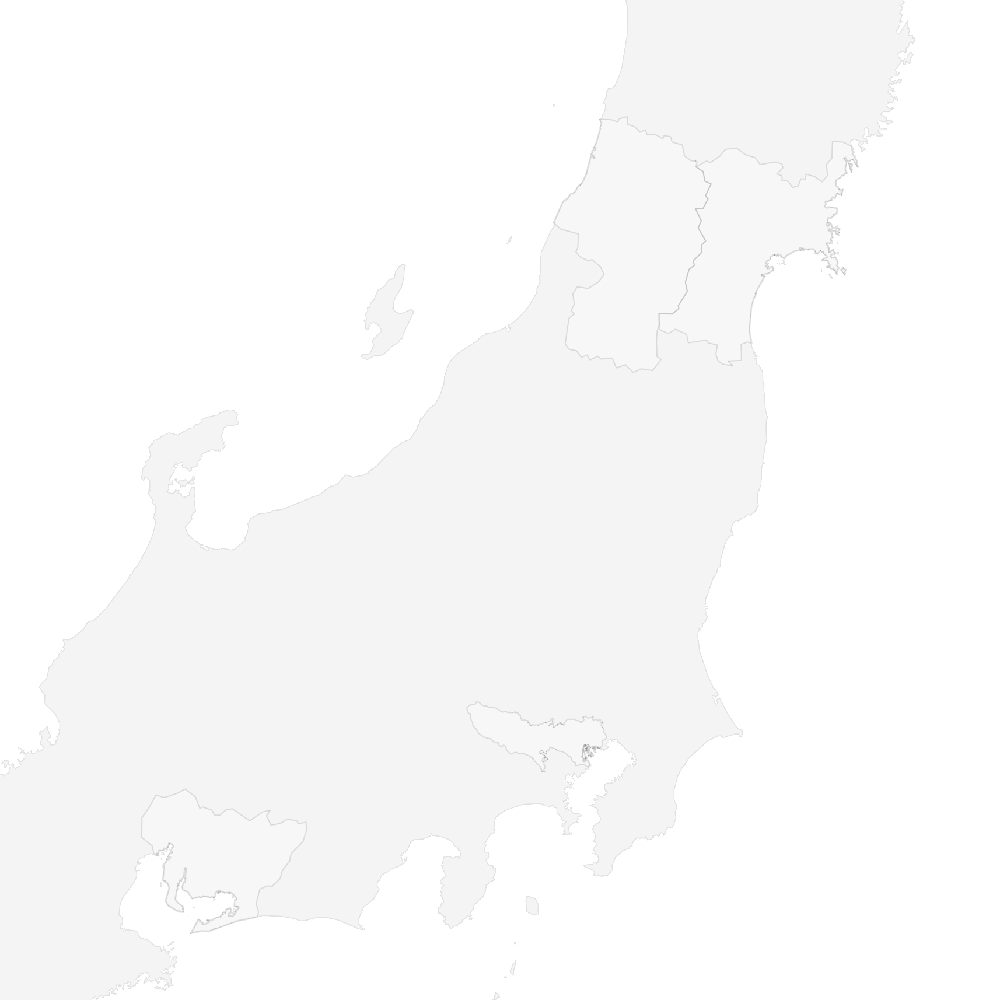
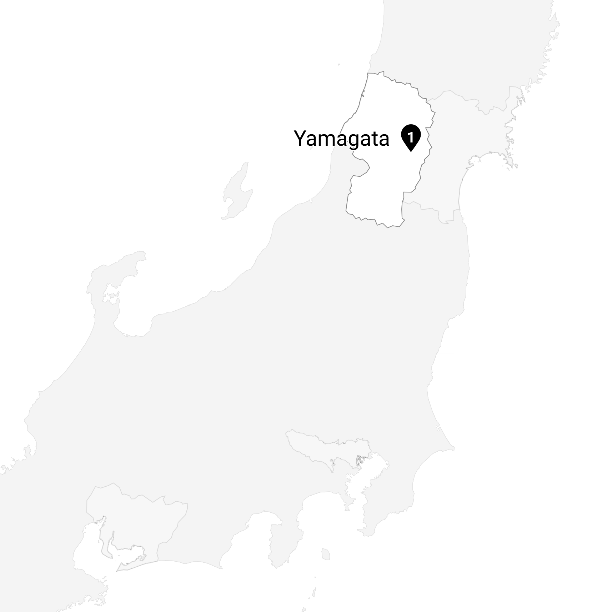
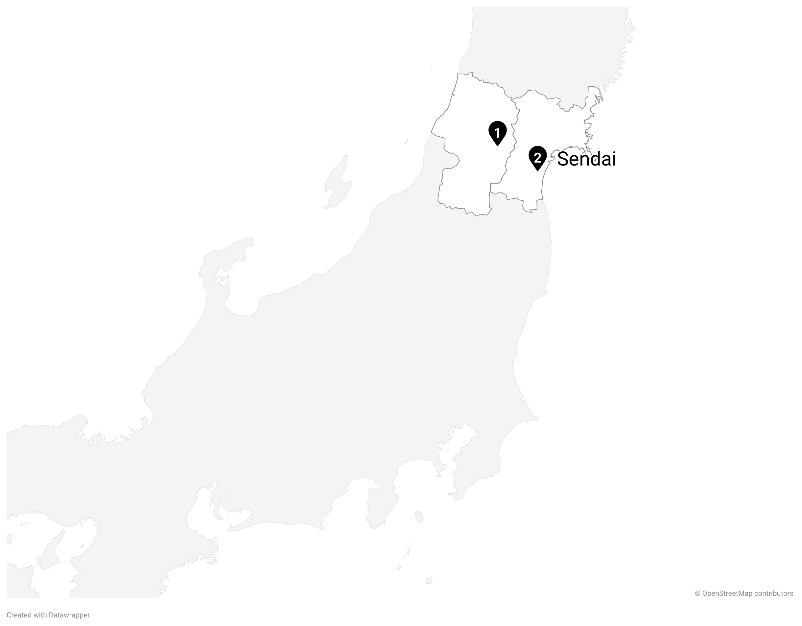
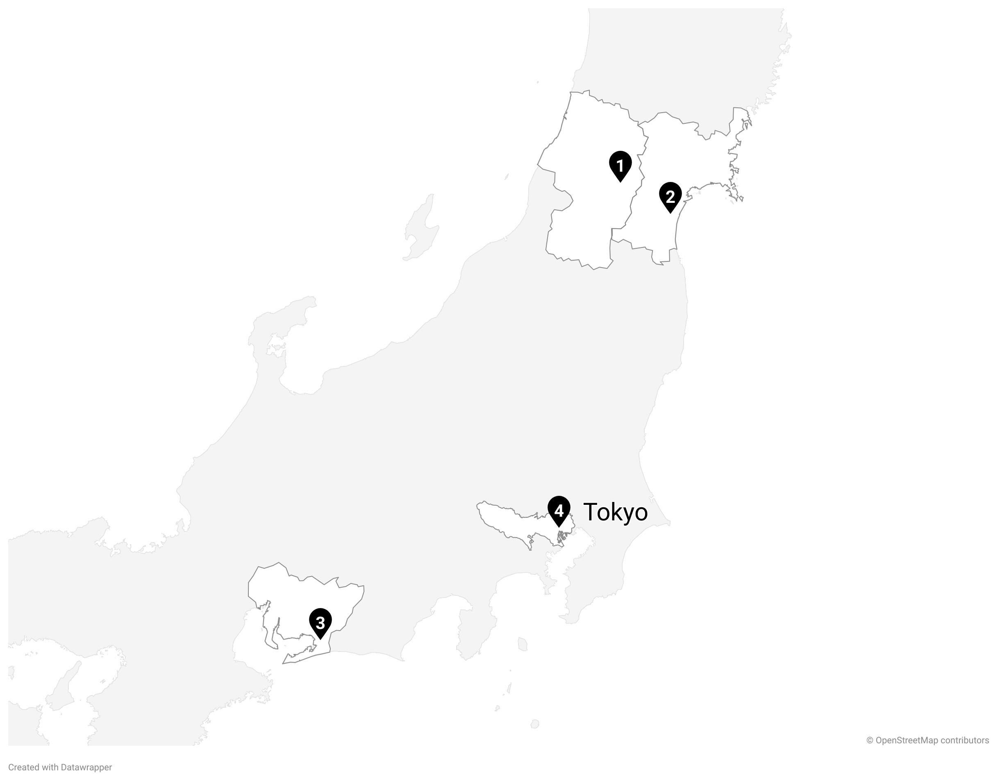

v0.4.3
年(度)
年齢
経歴
2001
0
山形県出身
2017
16
仙台高専 入学
＋
2017年の出来事についてのコメント
2020
19
研究室配属
＋
2020年の出来事についてのコメント
2021
20
仙台高専 卒業
2022
21
豊橋技科大 編入学
＋
2022年の出来事についてのコメント
2023
22
研究室配属
＋
2023年の出来事についてのコメント
2024
23
休学，豊橋技科大 卒業
＋
2024年の出来事についてのコメント
2025
24
現在
＋
2025年の出来事についてのコメント
  
